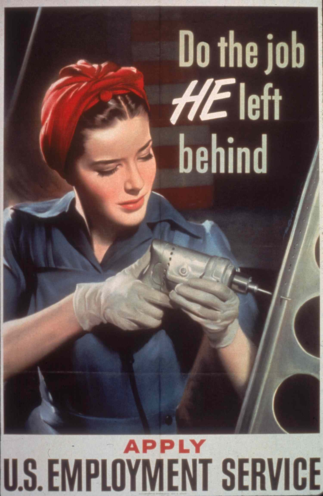
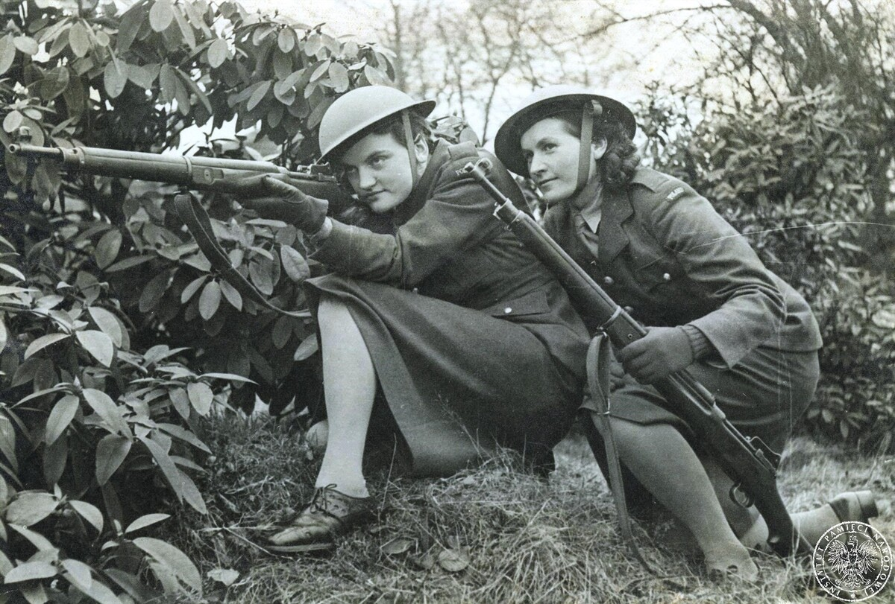
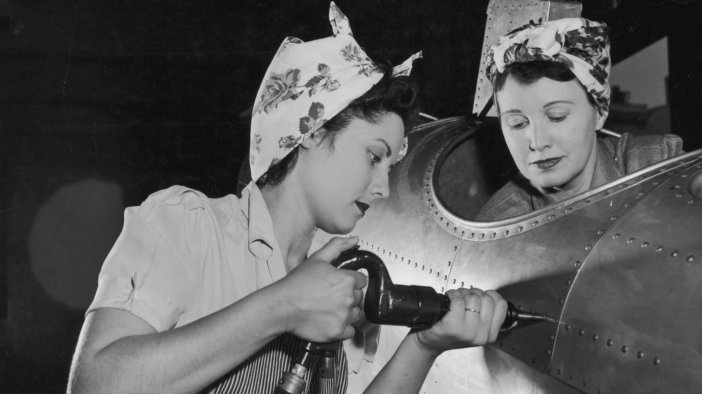
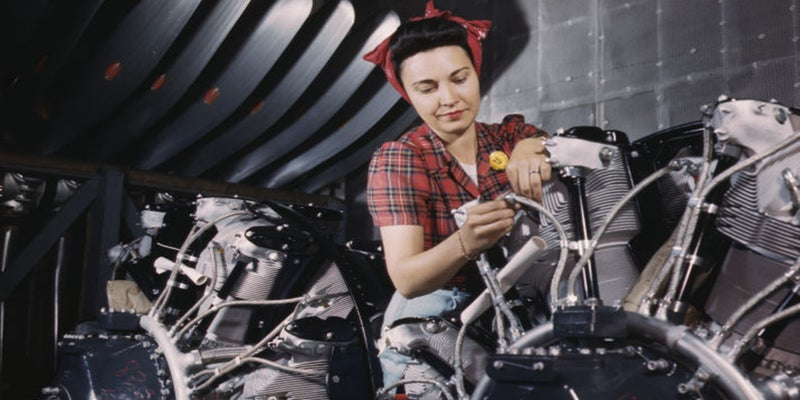

Mujeres en la Segunda Guerra Mundial


La participación de las mujeres en la Segunda Guerra Mundial fue crucial y marcó un cambio significativo en su rol en la sociedad. Desempeñaron papeles vitales tanto en el frente doméstico como en las fuerzas armadas, desafiando las normas tradicionales de género.

I - En los frentes domésticos:
* Trabajo industrial:
En los países aliados, millones de mujeres reemplazaron a los hombres en fábricas y talleres al ser estos reclutados para el combate.

Produjeron armamento, vehículos, aviones y otros equipos esenciales para la guerra.
Ejemplo: "Rosie the Riveter" en Estados Unidos, un ícono cultural que simbolizó a las trabajadoras industriales.
* Agricultura:
Las mujeres formaron grupos como el Women's Land Army en Reino Unido y EE. UU., trabajando en granjas para mantener el suministro de alimentos.
* Esfuerzos de soporte:
Participaron en campañas de racionamiento, recolección de materiales reciclables y creación de redes de apoyo comunitario.
Fueron voluntarias en organizaciones como la Cruz Roja, proporcionando atención médica, apoyo psicológico y alimentos a soldados y refugiados.
II -En el ámbito militar:
* Roles en las fuerzas armadas: